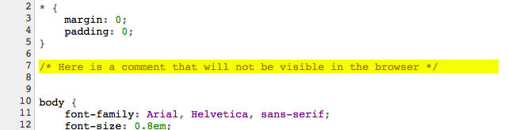

Структурата на CSS файла включва название на елемента (селектор), за който ще се приложи стила, и след това параметрите (свойствата), които се ограждат в големи скоби - { }.
Когато в големите скоби се поставят няколко свойства (както е в случая), те се отделят един
от друг чрез точка и запетая.
Можете да добавяте коментари в CSS файла, като ги оградите със символите /* и */ например:

Коментарите са полезни за ориентиране какво прави определена команда. Понеже CSS команди, включени между символите за коментар, не се изпълняват, друга честа употреба на комента-
рите е да се спре действието на дадена команда, без тя да бъде изтривана.